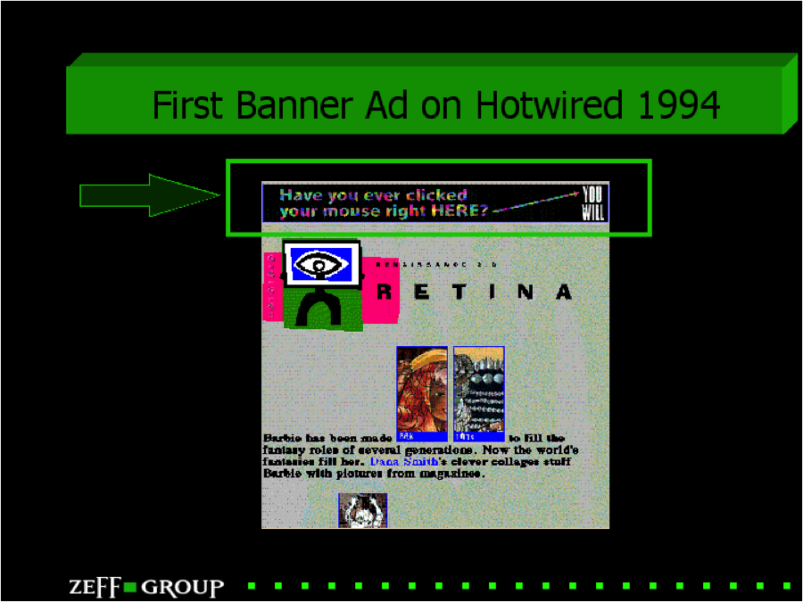
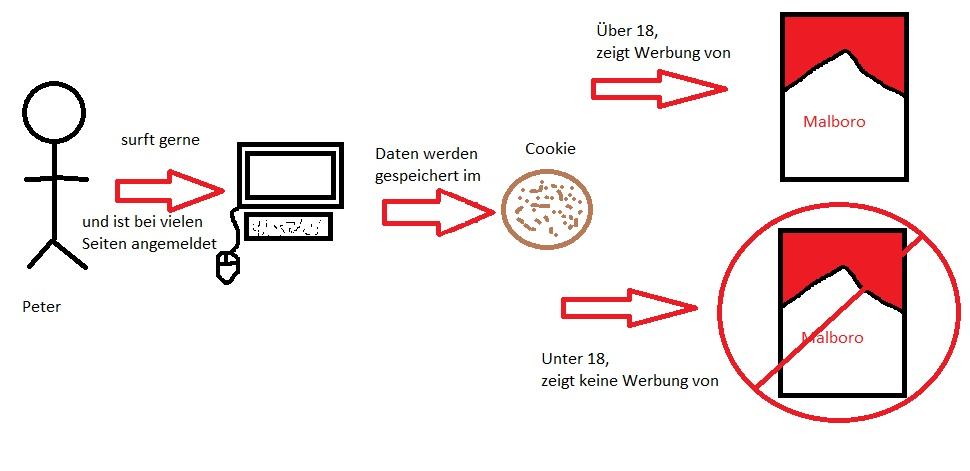
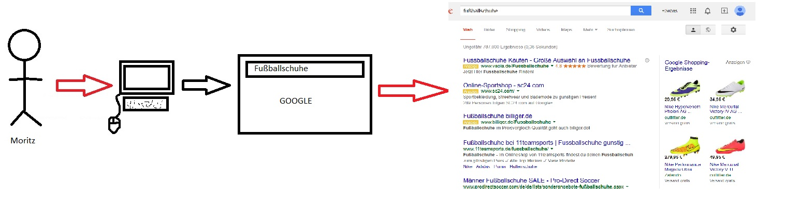
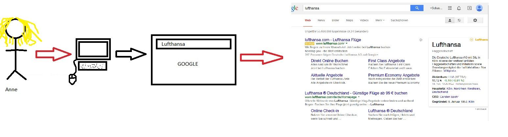
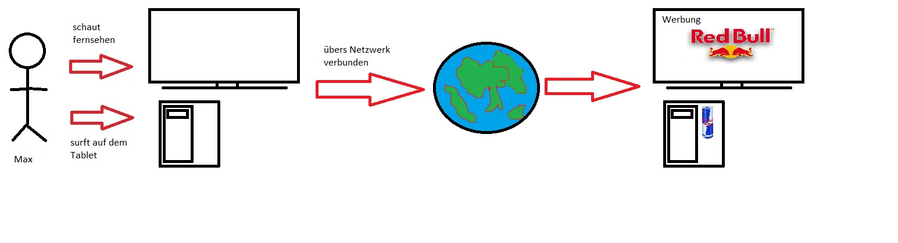
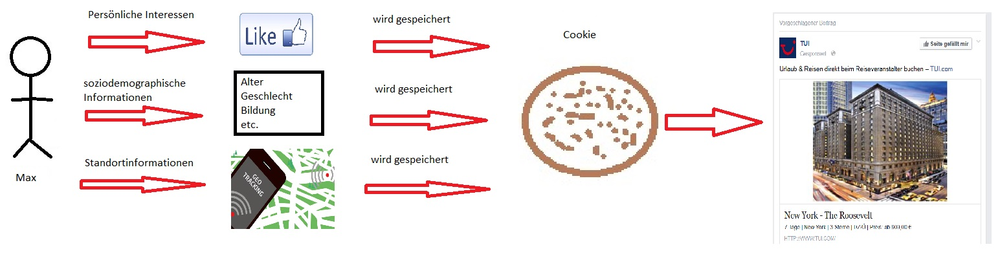
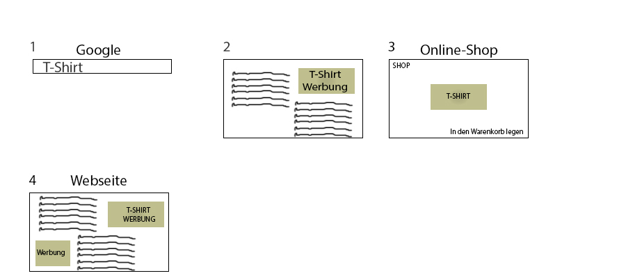

Werbung im Web - Livesession
Sebastian Kind & Baris Kabacali
Studiengang Medieninformatik an der Fachhochschule Köln
Campus Gummersbach
Übersicht
Einleitung
Geschichte
Was ist Targeting?
Unterschiedliche Methoden
Hauptteil
Erläuterung
Methoden und Kriterien unterscheiden und erklären?
Gefahren und Nutzen
Verhinderung von Targeting
Schluss
Fragen
Übung - Multiplechoice Test
Handout
Geschichte
Erster Werbebanner: 1994

Targeting
Marketinginstrument
Zielgruppenorientiertes Einblenden
Sechs verschiedene Methoden
Wo?
Unterschiedliche Methoden
Audience Targeting
Contextual Targeting
Cross-Media Targeting
Semantic Targeting
Social Targeting
Retargeting/Remarketing
Audience Targeting
Geschlecht
Alter
Einkommen
Interessen
Beispiel
Peter ist unter 16
Malboro macht viel Werbung im Web, und hat eingestellt dass keiner unter 18 ihre Werbung sehen darf

Contextual Targeting
Keyword Contextual (Suchwort) Targeting
Basiert auf RTB angeschlossene Webseite
Hinterlegte Schlüsselbegriffe abgeglichen
Beispiel
Moritz liebt Fußball
Leider sind seine Fußballschuhe kaputt

Semantic Targeting
Erweiterte Form des Contexual Targeting
Textes im zusammenhang mit schlüsselwort abgeglichen
Für Brand Protection eingesetzt
Beispiel
Anne möchte in den Urlaub
Sie hat sich für eine Fluggesellschaft entschieden
Nur leider hat sie panische Flugangst

und somit werden im ersten Blick keine negativ Daten angezeigt
Cross-Media Targeting
Nutzer wird zeitgleich über mehrere Kanäle angesprochen
Beispiel
Max ist ein Technik-Junkie
Er hat einen Smart-TV der übers Netzwerk verbunden ist
Er hat ein Tablet was übers Netzwerk verbunden ist
am liebsten laufen alle Sachen gleichzeitig

Social Targeting
Nutzerprofil mit Daten des sozialen Netzwerk angereichert
Beispiel
Max ist im sozialen Netzwerk angemeldet
Er hat seine persönlichen Interessen angegeben
Er liked sehr viel
Er postet öfters seinen Standort

und somit werden im ersten Blick Werbung aus der Umgebung oder letztlich gelikte Sachen angezeigt
Retargeting/Remarketing
Userdaten werden im Cookie des Retargeting-Anbieters gespeichert
Sobald man auf einer Seite des Retargeting-Netzwerks surft, erhält der User die passende Werbung ausgeliefert
Beispiel
Tom will sich ein T-Shirt bestellen und googelt nach T-Shirt.
Danach klickt er auf eine Anzeige und legt ein T-Shirt, welches ihm gefällt in den Warenkorb.
Doch dann vergisst er es zu bestellen.
Paar Tage später surft Tom auf einer Webseite des Retargeting-Anbieters und erhält plötzlich die passende Werbung ausgeliefert: Ein T-Shirt.

Nutzen
Werbeanbieter
Anpassung von Marketplaces
Gezielte, effiziente Werbung
Insgesamt günstigere Werbekampagnen
User
Anwender wird über Interessante Produkte informiert ohne lange danach zu recherchieren
Keine störende, ungewünschte Werbung
Übersicht über weiterführende Angebote
Der Werbetreibende weiß nicht wer am PC sitzt, sondern nur wie sich der Unbekannte User verhält
Gefahren
Werbeanbieter
Daten können in falschen Händen ungeahnt wertvoll sein
Zu viele Daten
User
Interessen, Vorlieben und Neigungen des Anwenders werden ausspioniert
Jeder Schritt wird verfolgt, fehlende Privatsphäre
Wirkt unheimlich auf den unerfahrenen Nutzer
Das Internet macht den Anschein, den User besser zu kenn als er selbt
Verwirrung bei Familien PCs
Verhinderung
Werbungen blockieren durch Addons wie „ AdblockPlus, Anti-Adblock, Simple Adblock“
Filter verwenden für bestimmte Wünsche
Vielen Dank für ihre Aufmerksamkeit
Stellen sie ruhig fragen :D